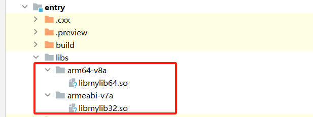
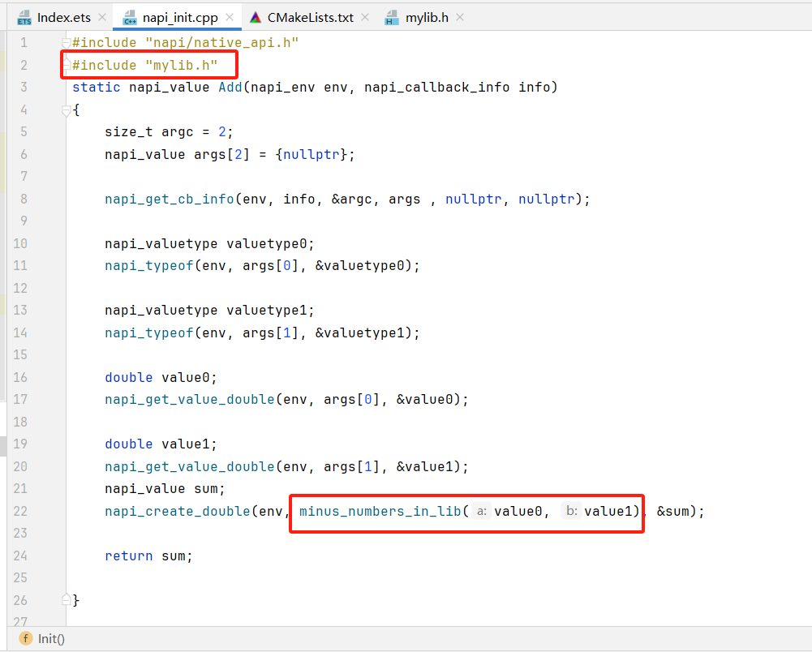
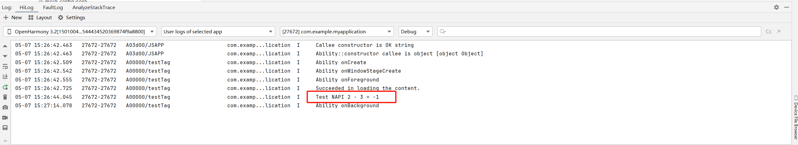

移动操作系统与端侧AI推理初探-端侧AI推理初探(part2)
实验目的
- 了解AI的基础概念，了解什么是端侧AI推理
- 学会交叉编译出动态链接库并且在应用开发时使用
实验环境
- OS:
-
编译：Ubuntu 24.04.4 LTS
-
Platform : VMware
实验时间安排
注：此处为实验发布时的安排计划，请以课程主页和课程群内最新公告为准
注: 所有的实验所需要的素材都可以在睿客网盘链接：https://rec.ustc.edu.cn/share/dfbc3380-2b3c-11f0-aee2-27696db61006 中找到。
此次实验只有两周时间，本文档为第二阶段的实验文档，阅读完毕后可以在第一阶段的基础上开始做第二阶段的实验。
- 5.16晚实验课，讲解实验、检查实验
- 5.23晚实验课，检查实验
- 5.30晚实验课，补检查实验
友情提示/为什么要做这个实验？
- 本实验难度不高，目的是让大家了解当前移动操作系统以及移动应用开发方法，并尝试使用AI推理满足功能。
- 如果同学们遇到了问题，请先查询在线文档。在线文档地址：https://docs.qq.com/sheet/DU1JrWXhKdFFpWVNR
第一部分：端侧AI推理初探
欢迎来到实验的AI探索部分！在本部分，我们将初步接触人工智能（AI）在端侧设备（如我们的DAYU200开发板）上进行推理的概念和实践。由于大家可能之前没有系统学习过AI，我们会从最基本的概念开始。（由于我们是操作系统课程，所以不会很详细(°°)～）
1.1 人工智能（AI）原理简介
你可能经常听到“人工智能”或“AI”这个词，它听起来可能很复杂，但其核心思想其实并不难理解。
1.1.1 什么是人工智能？
简单来说，人工智能的目标是让计算机能够像人一样思考、学习、决策和解决问题。我们希望机器能够执行那些通常需要人类智能才能完成的任务，比如识别图像、理解语言、下棋、驾驶汽车等。
1.1.2 机器学习 (Machine Learning, ML) - AI的核心驱动力
目前实现AI最主要和最成功的方法之一是机器学习 (ML)。与传统编程中我们明确告诉计算机每一步该怎么做不同，机器学习的核心思想是让计算机从数据中“学习”。
- 打个比方： 想象一下教一个小孩识别猫。你不会去精确描述猫的每一根胡须或毛发的数学模型，而是会给她看很多猫的图片（这些图片就是“数据”）。通过观察足够多的例子，小孩的大脑会自己总结出猫的共同特征（比如有尖耳朵、胡须、特定的脸型等——这就是“学习”或“训练模型”的过程）。之后，当你给她看一张新的、她以前没见过的猫的图片时，她也能认出来（这就是“预测”或“推理”）。
- 机器学习就是让计算机做类似的事情：我们给计算机提供大量的数据（比如成千上万张标记为“猫”或“狗”的图片），并使用特定的算法，让计算机自动从这些数据中找出规律和模式，形成一个“模型 (Model)”。
1.1.3 深度学习 (Deep Learning, DL) - 更强大的机器学习
深度学习是机器学习的一个分支，它使用一种叫做“人工神经网络 (Artificial Neural Networks)”的复杂数学结构，特别是包含许多层（所以叫“深度”）的神经网络。这些网络的设计灵感来源于人脑神经元的连接方式。深度学习在处理复杂数据（如图像、语音、自然语言文本）方面表现得尤其出色，近年来许多AI的突破都得益于深度学习。我们本次实验接触的语言模型就是一种基于深度学习的大语言模型。
总而言之，AI（尤其是通过机器学习和深度学习）使计算机能够通过分析数据来学习和做出智能的响应，而不仅仅是执行预先编程好的指令。
1.2 什么是 AI 推理 (Inference)？
在机器学习（包括深度学习）的生命周期中，通常有两个主要阶段：
-
训练 (Training)：
-
这是“学习”的阶段，就像前面例子里小孩看图识猫，或者学生备考学习知识的过程。
- 在这个阶段，我们会用海量的标注数据（例如，数百万张图片及其对应的标签，或者TB级的文本数据）来“喂”给一个初始的、未学习的AI模型。
- 通过特定的学习算法，模型会调整其内部参数，以使其能够对输入数据做出正确的响应（例如，正确分类图片，或理解文本的含义）。
- 训练过程通常需要非常强大的计算资源（如高性能GPU集群）和很长的时间（几天、几周甚至几个月）。
-
训练的最终产出是一个“训练好的模型 (Trained Model)” ——可以把它看作是包含了从数据中学到的所有知识和规律的“大脑”文件。
-
推理 (Inference)：
-
这是“使用”或“应用”的阶段，就像小孩识别一张新的猫图片，或者学生运用所学知识解答考试题目。
- 在这个阶段，我们把新的、未曾见过的数据（例如，用户上传的一张照片，或者用户输入的一段文字）输入到已经训练好的模型中。
- 模型会利用它在训练阶段学到的知识和规律，对这些新数据进行处理，并给出一个预测、判断或输出（例如，识别出照片中的物体，或者根据输入的文字生成一段新的文字）。
- 推理过程通常比训练过程快得多，对计算资源的要求也低得多，使其可以在计算能力相对较弱的设备上运行。
本实验的核心在于“推理”：我们将使用一个已经训练好的型语言模型 (TinyStory/Qwen)，并在我们的DAYU200开发板上运行它，让它对我们输入的文本进行处理并生成回应。我们不涉及模型的训练过程。
1.3 什么是 AI 推理框架 (Inference Framework)？
当你有了一个训练好的AI模型后，要在实际设备上高效地运行它进行推理，直接操作原始模型文件可能会非常复杂和低效。这时，AI推理框架就派上了用场。
AI推理框架是一套专门设计用来简化和优化在各种硬件平台上部署和执行已训练模型进行推理的软件工具包或库。
它的主要作用包括：
- 模型加载与解析： 能够读取和理解不同格式的训练好的模型文件（例如，TensorFlow产生的.pb文件，PyTorch的.pt文件，MindSpore的.ms文件，或者像Llama.cpp使用的.gguf格式）。
- 性能优化： 针对目标硬件（如CPU、GPU、NPU——DAYU200上就有NPU）进行深度优化，以加快推理速度、减少内存占用和降低功耗。这可能包括图优化、算子融合、量化、使用特定硬件加速指令等技术。
- 硬件抽象： 为上层应用提供统一的API接口，屏蔽底层不同硬件的差异。开发者不需要针对每种硬件都写一套不同的代码。
- 跨平台支持： 很多框架支持将模型部署到多种操作系统（Windows, Linux, Android, iOS, OpenHarmony等）和多种硬件架构上。
- 易用性： 简化了模型部署的流程，让应用开发者可以更容易地将AI能力集成到自己的应用中。
1.4 我们实验中接触到的推理工具/框架：
-
Llama.cpp: https://github.com/ggml-org/llama.cpp
-
这是一个非常优秀的开源项目，专门用于在CPU上高效运行Llama系列及其他大型语言模型 (LLM)。
- 它的主要特点是用纯C/C++编写，追求极致的性能和最小的依赖，非常适合交叉编译到各种端侧设备和嵌入式系统上（比如我们的DAYU200）。
- 它支持多种量化技术，可以将原本非常庞大的LLM模型压缩到几GB甚至几百MB，同时尽量保持较好的性能，使得在普通PC和资源受限的设备上运行LLM成为可能。
-
在本次实验中，我们将把Llama.cpp编译成一个库，并在OpenHarmony应用中调用它来实现语言模型的推理。
-
MindSpore Lite：
-
这是华为昇思MindSpore AI计算框架的轻量化版本，专门用于在端侧设备和物联网设备上进行高效推理。
- 我们会提供一个使用MindSpore Lite的Demo。MindSpore Lite支持多种硬件后端（CPU、GPU、以及华为自研的NPU），能够加载MindSpore训练出的模型（.ms格式）以及转换自其他框架（如TensorFlow Lite、ONNX）的模型。
- 它提供了Java和C++等多种语言的API，方便开发者在Android、iOS、OpenHarmony等系统上集成AI能力。
可以把推理框架想象成一个高度专业的“引擎室管理员”，它知道如何最高效地启动和运行一个复杂的“AI引擎”（即训练好的模型），并确保它在特定的“船只”（即你的硬件设备）上表现最佳。
1.5 端侧 AI (On-Device AI)推理 与应用开发简介
1.5.1 什么是端侧AI推理？
“端侧AI” (On-Device AI 或 Edge AI) 指的是直接在终端用户设备（如智能手机、平板电脑、智能手表、物联网设备、或者我们实验中的DAYU200开发板）上本地执行AI模型的推理过程，而不是将数据发送到远程的云服务器进行处理。
这也是我们课题组的一个研究方向，欢迎感兴趣的同学联系李永坤老师，然后加入我们(●'◡'●)
1.5.2 端侧AI推理的优势
- 低延迟 (Low Latency)： 数据处理在本地进行，无需网络传输，响应速度更快，对于需要实时反馈的应用（如实时语音识别、动态手势识别）至关重要。
- 隐私保护 (Privacy Protection)： 敏感数据（如个人照片、录音）无需上传到云端，保留在用户本地设备上，更好地保护了用户隐私。
- 离线可用 (Offline Capability)： 即使在没有网络连接或网络不稳定的情况下，AI功能依然可以正常使用。
- 节省带宽与成本 (Bandwidth & Cost Saving)： 减少了大量数据上传下载所需的网络带宽，也可能降低了对云端计算资源的依赖，从而节省成本。
其实最主要的是省钱💴还有隐私保护。
1.5.3 端侧AI推理的挑战：
- 资源限制： 端侧设备的计算能力（CPU、GPU、NPU性能）、内存、存储空间以及电池续航都远不如云服务器。
- 模型大小与效率： 需要对AI模型进行高度优化和压缩（如量化），使其能够在资源受限的设备上高效运行，同时尽量不损失太多精度。
在本次实验中，我们将体验到量化对模型大小和性能的影响,也会体会到内存和计算能力带来的限制。
1.5.4 端侧AI应用开发流程（简化版）
- 选择或训练AI模型： 根据应用需求选择合适的预训练模型（例如，是图像分类、目标检测、还是自然语言理解）。在本次实验中，我们直接使用已经训练好的TinyStory模型。
- 优化与量化： 对模型进行量化（如INT8量化），减小模型大小，提高在端侧设备上的运行效率。
- 应用集成与开发：
- 在你的应用程序代码中（对于Llama.cpp，我们将在C++层面操作），调用推理框架提供的API：
- 加载优化后的模型文件。
- 准备输入数据（例如，对图像进行预处理，或将用户文本编码成模型需要的格式）。
- 执行推理，获取模型输出。
- 对模型输出进行后处理，并呈现给用户或用于后续逻辑。
在本次实验中，我们将会提供完整的推理代码，同学们只需要编译出推理框架Llama.cpp的动态链接库放到项目代码中即可，如果你对推理的具体逻辑感兴趣，也可以阅读源代码来调整应用的逻辑。
第二部分 交叉编译
2.1 在 Ubuntu 上准备 OpenHarmony Native SDK
本次实验的核心任务之一是交叉编译 C++ 代码库（Llama.cpp）。这个过程需要在 Linux 环境下进行，并且需要一套特定的交叉编译工具链和 OpenHarmony 系统库/头文件（统称为 Native SDK 或 Toolchain）。这套工具运行在您的 Ubuntu 系统上，但其编译产生的目标代码是运行在 DAYU200 (arm32 架构) 上的 OpenHarmony 系统。
-
使用wget下载OpenHarmony Native SDK
下载地址:https://git.ustc.edu.cn/KONC/oh_lab/-/raw/main/native-linux-x64-5.0.3.135-Release.zip
-
解压，注意解压目录，后续需要使用
$ unzip native-linux-x64-5.0.3.135-Release.zip
这里估计又会有疑问，在3.1步中明明下载过SDK，为什么这里还需要下载SDK?
最主要原因为Linux和Windows使用的链接库不同，在开发板运行的OpenHarmony的内核是Linux，所以我们需要在Linux上编译出链接库使用，并且我们这里只使用了Native SDK，即编译CPP程序需要的工具，而在3.1步中，我们还下载了编译前端的SDK
2.2 交叉编译应用过程
❗注意：本部分采用mylib演示步骤，与实验检查要求需要编译的应用不一样，请仔细阅读实验评分标准。
在前面的步骤中，我们已经在 Ubuntu 系统上准备了 OpenHarmony Native SDK，其中包含了针对 DAYU200 开发板（arm32架构）的交叉编译工具链和系统库。现在，我们将深入理解什么是交叉编译，并实践一个简单的交叉编译过程。
2.2.0 什么是交叉编译
编译 (Compilation) 大家可能比较熟悉，它是指将人类可读的源代码（如 C、C++、Java 代码）转换成计算机处理器能够直接执行的机器码（可执行文件或库文件）的过程。这个过程通常由编译器在本机完成，例如，在你的 x86 架构的 Windows 电脑上用 Visual Studio 编译一个 Windows 程序，或者在你的 x86 架构的 Ubuntu 系统上用 GCC 编译一个 Linux 程序。这种在当前系统架构下编译出可运行于当前系统架构的程序的方式，我们称之为本地编译 (Native Compilation)。
交叉编译 (Cross-Compilation) 则有所不同。它是指：在一个特定的硬件架构和操作系统（我们称之为“宿主机”或“Host”）上，编译产生能够运行在另一个不同硬件架构和/或操作系统（我们称之为“目标机”或“Target”）上的可执行代码的过程。
- 宿主机 (Host): 通常是开发者使用的、计算能力较强的计算机，例如我们实验中使用的运行 Ubuntu 24.04 的 虚拟机Vmware。
- 目标机 (Target): 是我们希望最终运行我们程序的设备，例如我们实验中使用的运行 OpenHarmony 的 DAYU200 开发板，其处理器是 ARMv7a(armeabi32) 架构。
2.2.1 为什么需要交叉编译
在嵌入式系统和移动设备开发中，交叉编译非常普遍且必要，主要原因包括：
- 目标机资源受限： 像 DAYU200 这样的开发板或许多嵌入式设备，其处理器性能、内存大小、存储空间都远不如桌面PC。在这些设备上直接进行大型项目（如操作系统内核、复杂的 C++ 应用如 Llama.cpp）的编译会非常缓慢，甚至因资源不足而无法完成。
- 目标机缺乏开发环境： 很多目标设备可能没有安装编译器、链接器、库文件等完整的开发工具链。它们被设计为运行特定应用，而不是进行软件开发。(OpenHarmony中没有开发工具链)
- 开发效率和便利性： 开发者通常更习惯在功能强大、工具齐全的PC上进行代码编写、调试和项目管理。交叉编译使得开发者可以在熟悉的开发环境中为资源受限或环境不同的目标设备构建软件。
- 特定架构需求： 有些软件就是为特定非主流架构设计的，开发者可能没有该架构的物理机器用于本地编译。
2.2.2 交叉编译示例：为 DAYU200 编译和使用动态链接库
在此示例中，我们将创建一个简单的动态链接库，并将其放入3.1部分的Demo，编译运行。 环境假设：
- 宿主机1： Vmware上的Ubuntu 24.04 (x86_64)
- 宿主机2： Windows 10/11 (x86_64)
- 目标机： DAYU200 开发板 (arm32)，运行 OpenHarmony 5.0 标准系统
- OpenHarmony Native SDK 路径： ~/native (请根据您的实际解压路径调整)
- 交叉编译器路径 (示例): ~/native/llvm/bin/armv7-unknown-linux-ohos-clang++
-
在宿主机1(Ubuntu) 上创建源代码文件： 打开终端，创建一个名为
mylib.cpp的文件，在该文件中编写一个简单的减法函数如下：2. 为库创建头文件(mylib.h):// 使用 extern "C" 可以防止 C++ 编译器的名称修饰 (name mangling), // 使得这些函数更容易被 C 语言或其他语言调用, 或者在不同 C++ 编译器间保持一致性。 // 对于纯 C++ 内部使用, 且主程序也用同一编译器编译时, 这并非总是必需, 但作为库导出是一种良好实践。 extern "C" { double minus_numbers_in_lib(double a,double b) { return a - b; } }在同一文件夹创建
mylib.h，声明库中的函数:3. 将源代码交叉编译为动态链接库 (.so 文件):#ifndef MYLIB_H #define MYLIB_H #ifdef __cplusplus extern "C" { #endif // 声明库中导出的函数 double minus_numbers_in_lib(double a,double b) #ifdef __cplusplus } #endif #endif // MYLIB_H执行以下命令将 mylib.cpp 编译成名为 libmylib.so 的32位和64位动态链接库。
请务必将命令中的 SDK 路径替换为实际的路径。
如果命令执行成功，当前目录下会生成名为 libmylib32.so和libmylib64.so 的文件。 3. 在宿主机1上验证生成的文件类型：# 进入源代码所在目录 (如果不在该目录) # cd <your_source_code_directory> # 执行交叉编译命令,分别编译32位和64位动态链接库 $ ~/native/llvm/bin/armv7-unknown-linux-ohos-clang++ mylib.cpp -o libmylib32.so -shared -fPIC $ ~/native/llvm/bin/aarch64-unknown-linux-ohos-clang++ mylib.cpp -o libmylib64.so -shared -fPIC我们可以使用
file命令来查看生成的可执行文件的信息：注意输出中的 ARM EABI5 version 1，这表明它是一个为 ARM 32位架构编译的动态链接库，并且是为 OpenHarmony 系统准备的。这个文件不能在你的 x86_64 Ubuntu 宿主机上直接运行。如果你尝试使用，系统会报错（例如 cannot execute binary file: Exec format error）。 4. 将动态链接库从宿主机1下载到宿主机2：即从虚拟机传输文件到Windows。（可以使用虚拟机的增强功能，共享文件夹，睿客网盘，邮箱等方式）$ file libmylib64.so libmylib64.so: ELF 64-bit LSB shared object, ARM aarch64, version 1 (SYSV), dynamically linked, with debug_info, not stripped $ file libmylib32.so libmylib32.so: ELF 32-bit LSB shared object, ARM, EABI5 version 1 (SYSV), dynamically linked, with debug_info, not stripped
2.2.3 交叉编译运行
注意，从这一步开始将在宿主机2上操作。
首先，请参照第一部分实验文档3.1的在 Windows 上安装 DevEco Studio一节下载和配置DevEco Studio，并且创建好Demo文件。
- 在entry文件夹下创建
armeabi-v7a文件夹
- 将3.2.2中编译的libmylib32.so文件复制到
armeabi-v7a文件夹下，将libmylib64.so文件复制到arm64-v8a文件夹下  - 修改
entry\src\main\cpp\CMakeLists.txt文件，添加以下内容# 在文件末尾添加以下内容 # 添加动态链接库 if(OHOS_ARCH STREQUAL arm64-v8a) target_link_libraries(entry PUBLIC ${CMAKE_CURRENT_SOURCE_DIR}/../../../libs/${OHOS_ARCH}/libmylib64.so) elseif(OHOS_ARCH STREQUAL armeabi-v7a) target_link_libraries(entry PUBLIC ${CMAKE_CURRENT_SOURCE_DIR}/../../../libs/${OHOS_ARCH}/libmylib32.so) else() message(FATAL_ERROR "unrecognized ${OHOS_ARCH}") endif() - 创建
entry\src\main\cpp\mylib.h文件，将3.2.2中创建的mylib.h文件复制到该文件夹下 - 完成前四步后，现在就可以使用我们编译的动态链接库了。我们可以修改
entry\src\main\cpp\napi_init.cpp文件，添加以下内容  - 再次编译运行(必须在开发板上运行!)即可看到修改后的结果 
回答一下2.2.2和2.2.3中可能存在的疑问
Q: 为什么需要编译两种架构（32位和64位）的动态链接库？
A: DAYU200开发板运行的OpenHarmony为32位架构，所以32位的动态链接库是必须的，但是IDE要求我们同时提供32位和64位的动态链接库（详见第一部分3.1.2的问题4），所以我们也需要编译64位的动态链接库。
Q: 为什么要修改CmakeLists.txt文件？CmakeLists.txt文件是做什么的？
A: CmakeLists.txt文件是CMake的配置文件，用于指定项目的编译选项、依赖库等信息。在本实验中，我们通过修改CmakeLists.txt文件，将我们编译的动态链接库添加到项目中。
Q: 为什么必须要在开发板运行修改后的程序？为什么不能使用Previewer预览？
A: 因为在5.0.3.906的DevEco Studio中，已经无法在预览器中查看native shared library的引用效果。╮(╯▽╰)╭（其实如果可以编译，就算没有运行，大概率也不会报错）
2.2.4 展望：交叉编译 Llama.cpp
编译 Llama.cpp 的过程与我们刚刚完成的动态库示例在概念上是高度一致的：
- Llama.cpp 核心代码会被交叉编译成多个动态链接库 (通常是 libllama.so，libgguf.so等)。这对应我们示例中的 libmylib.so。编译时同样需要 -shared 和 -fPIC 选项。（但是由于使用cmake编译，这些选项被隐藏了）
- Llama.cpp 项目会提供多个头文件 (通常为 llama.h，gguf.h等)。这对应我们示例中的 mylib.h。
- 使用时，需要把编译好的 libllama.so 等动态链接库放到项目目录中，并确保可执行程序能够找到 libllama.so等链接库。
Llama.cpp 的编译通常CMake构建系统管理，这些工具会自动处理源文件列表、编译选项、链接步骤等。我们的任务将是正确配置这些构建系统，使其使用我们为 OpenHarmony 准备的交叉编译工具链
在实验中，我们提供了助教已经完成的代码，所以不要求大家了解怎么编写相关代码，我们需要同学们自行编译出llama相关的动态链接库，并且放入到项目目录可以运行即可。
第三部分：Native C++ 交叉编译与 Llama.cpp 集成实践
在前面的章节中，我们已经： - 2.1节中在Ubuntu上准备好了OpenHarmony Native SDK，明确了交叉编译工具链的路径。 - 2.2节通过一个简单的动态链接库示例，理解并实践了基本的交叉编译流程。
现在，我们将运用这些知识和工具，来完成本次实验的核心任务之一：下载并交叉编译著名的开源大语言模型推理库——Llama.cpp。
Llama.cpp是一个项目名称，并不是一个c++源码文件
3.1 Llama.cpp 的下载与交叉编译
Llama.cpp 是一个用C/C++编写的、用于高效运行Llama系列大型语言模型的推理引擎。它以其高性能、低资源占用和良好的可移植性而闻名，非常适合在包括端侧设备在内的多种平台上运行。
3.1.1 Llama.cpp的下载
- 通过压缩包下载：
-
使用
wget下载Llama.cpp压缩包推荐链接: https://git.ustc.edu.cn/KONC/oh_lab/-/raw/main/llama.cpp.zip
-
解压Llama.cpp压缩包,解压后得到llama.cpp文件夹
$ unzip llama.cpp.zip -
第二种方式(通过git下载)：
-
安装git
$ sudo apt-get install git -
下载Llama.cpp
这会在当前目录下创建一个名为 llama.cpp 的文件夹，其中包含所有源代码。 3. 注意事项：如果你使用git从llama的github主页下载，需要修改以下文件 - llama.cpp/tools/mtmd/clip.cpp的1813行，修改为$ git clone https://github.com/ggml-org/llama.cpp.git- llama.cpp/tools/export-lora/export-lora.cpp的151行，修改为/*.mem_size =*/ static_cast<size_t>((gguf_get_n_tensors(ctx_gguf.get()) + 1) * ggml_tensor_overhead()),/*.mem_size =*/ static_cast<size_t>(gguf_get_n_tensors(base_model.ctx_gguf)*ggml_tensor_overhead()),3.1.2 CMake 与交叉编译简介
1.CMake 是什么？
CMake 是一个开源的、跨平台的构建系统生成器。它本身不直接编译代码，而是读取名为 CMakeLists.txt 的项目配置文件，然后根据这些配置生成特定构建工具（如 Makefile文件）所需的构建脚本。开发者只需编写一次 CMakeLists.txt，就可以在不同平台和编译器上生成相应的构建方案。
我们曾在Lab1中学习过怎么使用makefile文件来进行自动化编译，Cmake就是自动产生Makefile的工具
2. 为什么使用 CMake 进行交叉编译？
CMake 对交叉编译提供了优秀的支持，主要通过
工具链文件 (Toolchain File)来实现。工具链文件是一个特殊的 CMake 脚本，它告诉 CMake 关于目标平台的所有信息： -
要使用的C和C++交叉编译器路径。
- 目标系统的名称、版本和处理器架构。
- 其他特定于目标平台的编译和链接选项。
幸运的是，OpenHarmony SDK 通常会提供预设好的工具链文件，极大地简化了我们的交叉编译配置。
3.1.2 使用 CMake 交叉编译 Llama.cpp (本实验选用)
-
定义 OpenHarmony SDK 路径 (重要！)： 在终端中，首先定义一个指向你的 OpenHarmony Native SDK 在 Linux 环境下的根目录的环境变量。请将 <你的OHOS SDK Linux Native部分的根路径> 替换为你 SDK 的实际路径。
确保# 示例路径，请务必根据您的实际情况修改！！！ export OHOS_SDK_LINUX_NATIVE_ROOT="/home/kon/native" # 验证路径 (可选) echo "OpenHarmony SDK Linux Native Root: ${OHOS_SDK_LINUX_NATIVE_ROOT}" ls "${OHOS_SDK_LINUX_NATIVE_ROOT}/build-tools/cmake/bin/cmake" || echo "SDK bundled CMake not found!" ls "${OHOS_SDK_LINUX_NATIVE_ROOT}/build/cmake/ohos.toolchain.cmake" || echo "OHOS Toolchain file not found!"OHOS_SDK_LINUX_NATIVE_ROOT变量设置正确，并且其下的 CMake 和工具链文件存在。 -
使用OpenHarmony SDK生成编译文件:
几个比较重要的参数说明：${OHOS_SDK_LINUX_NATIVE_ROOT}/build-tools/cmake/bin/cmake \ -B build-ohos \ -DCMAKE_TOOLCHAIN_FILE=${OHOS_SDK_LINUX_NATIVE_ROOT}/build/cmake/ohos.toolchain.cmake \ -DOHOS_ARCH=armeabi-v7a \ -DGGML_NATIVE=OFF \ -DGGML_OPENMP=OFF \ -DLLAMA_BUILD_TESTS=OFF \ -DLLAMA_CURL=OFF \ -DCMAKE_BUILD_TYPE=Debug${OHOS_SDK_LINUX_NATIVE_ROOT}/build-tools/cmake/bin/cmake: 指定使用 OpenHarmony SDK 中自带的 CMake 可执行文件。这有助于保证与 SDK 工具链的兼容性。-B build-ohos32: 指定 CMake 生成构建文件的目录为 build-ohos（如果目录不存在，CMake 会创建它）。这是“out-of-source”构建，是一个好习惯，可以保持源代码目录的整洁。-DCMAKE_TOOLCHAIN_FILE=${OHOS_SDK_LINUX_NATIVE_ROOT}/build/cmake/ohos.toolchain.cmake: 这是交叉编译的核心配置。 它告诉 CMake 使用 OpenHarmony SDK 提供的工具链文件。这个文件内部定义了交叉编译器、Sysroot路径、目标架构等信息。-DOHOS_ARCH=armeabi-v7a: 这个参数传递给 ohos.toolchain.cmake 文件，用于指定目标CPU架构为 armeabi-v7a (ARM 32位架构)。
-
编译Llama.cpp生成动态链接库与头文件:
${OHOS_SDK_LINUX_NATIVE_ROOT}/build-tools/cmake/bin/cmake --build build-ohos --config Debug -j ${OHOS_SDK_LINUX_NATIVE_ROOT}/build-tools/cmake/bin/cmake --install build-ohos --prefix "build-ohos/install" -
查找编译产物：
编译成功后，生成的库文件和可执行文件通常位于构建目录 (build-ohos) 下的特定子目录中：
- 动态链接库 libllama.so 可能位于：build-ohos/install/lib。
- 头文件可能位于：build-ohos32/install/include。 请检查这些常见位置。例如：
# ls -l build-ohos32/install/lib cmake libggml-base.so libggml-cpu.so libggml.so libllama.so libllava_shared.so libmtmd_shared.so pkgconfig # ls -l build-ohos32/install/include ggml-alloc.h ggml-blas.h ggml-cpp.h ggml-cuda.h ggml-kompute.h ggml-opt.h ggml-sycl.h gguf.h llama.h ggml-backend.h ggml-cann.h ggml-cpu.h ggml.h ggml-metal.h ggml-rpc.h ggml-vulkan.h llama-cpp.h
-
验证编译产物 在Ubuntu宿主机上，使用 file 命令检查生成的 libllama.so 文件，确认它的架构：
输出应明确指出它们是为# 在Ubuntu宿主机上，使用 file 命令检查生成的 libllama.so 和 main 文件，确认它们的架构： $ file build-ohos/install/lib/libllama.so build-ohos/install/lib/libllama.so: ELF 32-bit LSB shared object, ARM, EABI5 version 1 (SYSV), dynamically linked, BuildID[sha1]=9b36a4f7b3365492d0c566681e81b6aebaafcb8d, with debug_info, not strippedARM32架构(例如上面的ARM,EABI5)
完成这些步骤后，你就成功使用CMake将Llama.cpp交叉编译为可以在目标OpenHarmony设备（配置为armeabi-v7a）上运行的库了。接下来的步骤将是将这些产物部署到DAYU200并集成到Demo HAP中。
3.1.3 任务目标
将llama.cpp的编译产物集成到Demo HAP中,我们使用在第一阶段创建的，名为你的学号的Demo。由于Llama.cpp的代码较为复杂，故本次实验不要求同学们理解其内部实现，只需要将其作为黑盒即可。
我们会提供实现好的源代码，你只需要把文件夹替换掉。(源代码中有编译好的64位库，所以你只需要编译32位的库即可，编译方式和3.1.2中相同)
- 下载提供好的源代码压缩包，解压，将原本创建的空白项目中的entry文件夹删除，将压缩包中的entry文件夹复制到项目根目录下。
- 在
entry/src/main/cpp目录下创建include文件夹，将3.1.2中编译得到的头文件（.h文件）复制到该文件夹下 - 在
entry/libs目录下创建armeabi-v7a文件夹，将3.1.2中编译得到的32位动态链接库（.so文件）复制到该文件夹下 - 构建应用并且在开发板上运行,上面输入框可以输入提示词，效果如下所示:

这里效果很差，原因是我们为了大家的体验，选用了特别小的Tinystory模型，该模型将会生成一个小故事，如果你对如何运行其他可以使用的模型比较感兴趣，查看附录即可。
第四部分：第二阶段实验内容与检查标准
4.1 实验内容
- 交叉编译llama.cpp得到32位的动态链接库
libllama.so,libggml-base.so,libggml-cpu.so,libggml.so,libllama.so,libllava_shared.so与头文件(参考3.1.2) - 将llama.cpp的编译产物集成到Demo HAP中(参考3.1.3)
- 在DAYU200上运行Demo HAP(参考第一阶段3.1.3)
4.2 实验评分标准
本次实验共 10 分，第二阶段满分为 5 分，实验检查要求和评分标准如下：
- 成功交叉编译llama.cpp得到32位动态链接库和头文件(2')
- 成功将llama.cpp的编译产物集成到Demo HAP中,并且成功运行(3')
附录
附录A: llama.cpp的使用
我们在实验中为了实验的体验，使用了极小的小故事文本生成模型，名字叫做TinyStory,其由于模型太小，所以产生文本的效果有点差。
那么同学就要问了，有没有表现更好一点的模型呢？答案是：有的兄弟，有的。
我们推荐qwen2的0.5B模型（当然其他的GGUF模型也可以，不过要考虑开发板只有2G运存）。
A.0 创建交换分区
在运行大型应用程序，尤其是像Llama.cpp这样的大语言模型时，我们可能会遇到开发板物理内存（RAM）不足的情况。为了让系统在这种情况下依然能够运行（尽管性能可能会有所下降），我们可以配置“交换分区”。
什么是交换分区？ 交换分区 (Swap Space)，常被称为“虚拟内存”的一部分，是操作系统在硬盘或其他持久性存储设备（在DAYU200上通常是eMMC内部存储）上划分出来的一块区域。 - 工作原理： 当系统的物理内存 (RAM) 即将耗尽时，操作系统会将RAM中一些暂时不活跃的数据（称为“内存页”）临时移动到交换空间中，从而释放出物理内存给当前更需要的活动进程使用。当那些被移到交换空间的数据再次需要被访问时，操作系统会再将它们从交换空间读回到RAM中。 - 目的： - 扩展可用内存： 使得系统能够运行比实际物理内存更大的程序或同时运行更多的程序。 - 防止内存溢出 (Out-Of-Memory, OOM)： 在物理内存完全用尽时，避免系统因无法分配内存而直接崩溃或杀死重要进程。
如何创建交换分区？
# hdc shell 进入开发板执行
cd data/llama_file
# 在2GB的dayu200上加swap交换空间
# 新建一个空的ram_ohos文件
touch ram_ohos
# 创建一个用于交换空间的文件（8GB大小的交换文件）
dd if=/dev/zero of=/data/ram_ohos bs=1G count=8
# 设置文件权限，以确保所有用户可以读写该文件：
chmod 777 /data/ram_ohos
# 将文件设置为交换空间：
mkswap /data/ram_ohos
# 启用交换空间：
swapon /data/ram_ohos
# 查看内存空间:
free -m
A.1 使用qwen2的0.5B模型
如果你只是想要尝试一下，并不想自己构建，直接下载睿客网盘中第二阶段素材中的Demo即可（https://rec.ustc.edu.cn/share/dfbc3380-2b3c-11f0-aee2-27696db61006 中的
qwen-Demo.hap） 1. 下载qwen2的0.5B模型，下载地址：https://huggingface.co/Qwen/Qwen2-0.5B-Instruct-GGUF/tree/main ，下载其中qwen2-0_5b-instruct-q4_0.gguf即可 2. 将其放入entry/src/main/resources/resfile文件夹下 3. 修改entry/src/main/ets/pages/Index.ets，修改其中的modelName变量为:4. 重新构建应用运行即可（由于加载模型时间过长，可能会存在appfreeze导致应用闪退，这是正常现象，真正感兴趣联系助教）效果如下所示：@State modelName: string = 'qwen2-0_5b-instruct-q4_0.gguf';